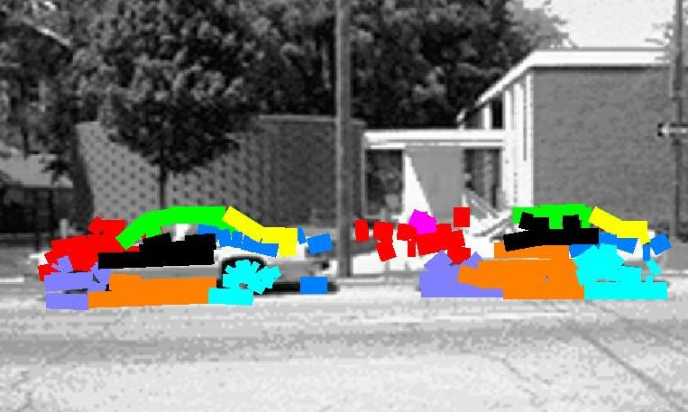
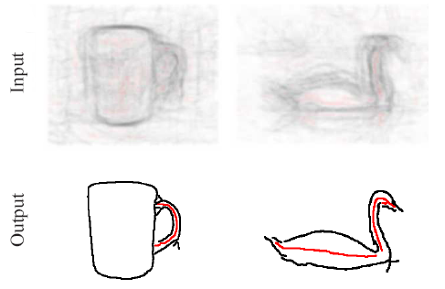
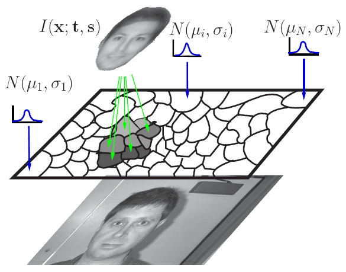
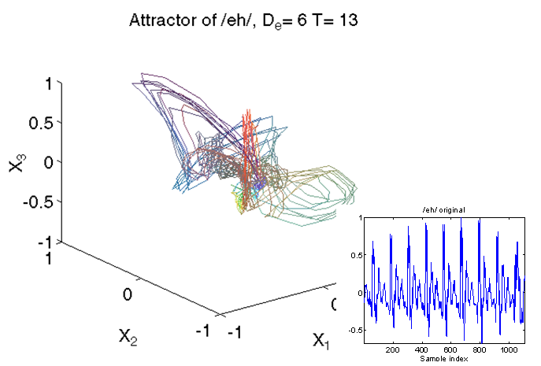

Combining Low- and High- level vision
I am working on learning, segmenting and parsing with deformable object models. The main priority of my research is to develop models that allow to combine low-level processing (e.g. boundary detection, segmentation) with high-level information, e.g. model-based guidance.

Object Parsing
We address the problem of detecting
an object and its components by recursively composing them from image observations.
We
develop an efficient inference method
that addresses the computational complexity of the
problem by relying on A*.
We use our hierarchical object model
to efficiently compute a coarse solution
which then guides search at the fine level.
This rules out futile compositions and allows us to parse
complex objects in heavily cluttered scenes.
I. Kokkinos and A. Yuille,
Inference and Learning with Hierarchical Shape Models
Int.l Journal of Computer Vision (IJCV), to appear.
[pdf]
I. Kokkinos and A. Yuille,
HOP: Hierarchical Object Parsing,
Proc.
IEEE Conf. on Computer Vision and Pattern Recognition (CVPR), 2009.
[pdf]
[bib]
[slides]

Learning Deformation Models
Modeling deformations is necessary in order to disentangle shape and appearance variation. This
makes easier the treatment of both.
We discard appearance variation by working with the edges and ridges of an image, and focus
on the task of automatically registering our training set.
We work with two types of deformation models: Active Appearance Models and Part-Based deformation models. We formulate the task of learning as an Expectation Maximization procedure and then provide the tools that are needed to render the EM approach feasible.
We demonstrate results using a wide variety of objects. In our on-going work we use this approach to automate the learning of the
hierarchical models used for parsing.
I. Kokkinos and A. Yuille,
Unsupervised Learning of Object Deformation Models,
Proc. IEEE Int'l. Conf. on Computer Vision (ICCV), 2007.
[pdf]
[supplement]
[bib]
[slides]

Contours and Recognition
This is the first of our works on using the boundaries and symmetry axes of the image to model and detect objects.
We extract these features using T. Lindeberg's scale-invariant primal sketch and break them into simple tokens using line segmentation.
After constructing a simple codebook-model from these features we then detect objects with matching and voting.
The misses of the feature extraction stage are recovered in a top-down stage.
For this we develop an efficient algorithm that relies on Stoke's theorem to generalize the Integral Image technique to arbitrary shapes.
I. Kokkinos, P. Maragos and A. Yuille,
Bottom-Up and Top-Down Object Detection Using Primal
Sketch Features and Graphical Models,
Proc.
IEEE Conf. on Computer Vision and Pattern Recognition (CVPR), 2006.
[pdf]
[slides]
[bib]
[code]

Segmentation and Recognition We formulate the task of segmenting an image as the assignment of observations to hypotheses, and treat object models as providing one of the hypotheses considered.We phrase the problem of joint segmentation and recognition using the EM algorithm, interpreting the assignment of observations as the E-step and model fitting as the M-step.
Based on the variational interpretation of EM we build a link with curve evolution, and implement the E-step using Level-Set methods. Apart from top-down segmentation, the EM scheme allows the validation of bottom-up object detection results, pruning false positives.
I. Kokkinos and P. Maragos,
Synergy Between Image Segmentation and Object Recognition Using
the Expectation Maximization Algorithm
IEEE Trans. on Pattern Analysis and Machine Intelligence (PAMI), Vol. 31(8), pp. 1486-1501, 2009.
[pdf]
[slides]
[bib]
ICCV '05 version: [pdf]
[bib]

Scale-Invariant Descriptors
We introduce a method to extract
an appearance descriptor around a point in a scale-invariant manner, but
without relying on scale selection.
For this we use a log-polar sampling scheme, that turns image rotations and scalings into
translations in the log-polar coordinate system. Taking the magnitude of the Fourier Transform then
yields a scale- and orientation- invariant descriptor.
This descriptor outperforms the SIFT and GLOH descriptors on standard benchmarks.
It is most useful for edges,
as they lack a reliable scale; we show that
it can enhance the image sketch and lead to improved detection performance.
I. Kokkinos and A. Yuille,
Scale Invariance without Scale Selection,
Proc.
IEEE Conf. on Computer Vision and Pattern Recognition (CVPR), 2008.
[pdf]
[bib]
[code]
I. Kokkinos, [new!]
Boundary Detection and Grouping using Descriptors, Boosting and Fractional-Linear Programming,
Proc.
IEEE Conf. on Computer Vision and Pattern Recognition (CVPR), 2010.
M. Bronstein and I. Kokkinos, [new!]
Scale-invariance in local heat kernel descriptors without scale selection and normalization,
Proc.
IEEE Conf. on Computer Vision and Pattern Recognition (CVPR), 2010.
Other Projects

Texture Analysis and Segmentation
We use the AM-FM paradigm for texture analysis and segmentation, and focus on the Dominant Component Analysis (DCA) algorithm.
This treats the image as a locally narrow-band signal with slowly varying amplitude and orientation.
We introduce an interpretation of Gabor filtering as a spatially-weighted fitting of a sinusoidal model and
cast the DCA algorithm in a detection-theoretic framework.
We then build similar generative models for edge patches, allowing to discriminate among edges and textures using model comparison. See e.g. reconstruction results using the two alternative models.
This discrimination allows us to then fuse the texture, edge and non-texture cues for natural image segmentation in a spatially adaptive manner. This yields better results on the Berkeley segmentation benchmark than
Normalized Cuts, or variational methods using different features.
I. Kokkinos, G. Evangelopoulos and P. Maragos,
Texture Analysis and Segmentation using Modulation Features, Generative Models and
Weighted Curve Evolution
IEEE Trans. on Pattern Analysis and Machine Intelligence (PAMI), Vol. 31(1), pp. 142-157, 2009.
[pdf]
[bib]
[slides]
[project page]
[code]
Earlier:
ICIP 04a [pdf]
[bib]
ICIP 04b [pdf]
[bib]
VLSM 05
[pdf]
[bib]
Texture 05
[pdf]
[bib]

Biologically Plausible Networks
Starting from the analysis of Hopfield networks using Lyapunov functions, we develop a reaction-diffusion
interpretation of a recurrent neural network that was initially developed for biological plausibility.
We then learn the parameters of such models using ground truth edge detection results. For this we build on the variational approach to statistical inference and interpret the network state evolution as estimating the mode of distribution. The learned model's performance is superior to that of standard edge detection algorithms.
I. Kokkinos, R. Deriche, O. Faugeras and P. Maragos,
Computational Analysis and Learning for a
Biologically Motivated Model of Boundary Detection
Neurocomputing, Vol. 71(10-12), pp. 1798-1812, 2008.
[pdf]
[bib]
Longer INRIA report:
[pdf]
[bib]
Earlier ECCV 2004 version:
[pdf]
[bib]

Speech and Chaotic Systems
We use nonlinear function approximation techniques to analyze the nonlinear dynamics of speech.
An embedding of the observed scalar speech time series is first generated using time-delayed samples of the signal. For a sufficiently high dimension, the geometrical properties of the original dynamical system can be recovered.
My research focused on algorithms for learning the embedded signal dynamics, using a sparse set of input-output pairs. This allows for the estimation of invariants of its dynamics, like Lyapunov exponents.
Using mixture-of-experts for regression we obtained good results both on synthetic and real data, and the estimated Lyapunov exponents turned out to be useful as features for speech recognition.
I. Kokkinos and P. Maragos,
Nonlinear Speech Analysis Using Models for Chaotic Systems
IEEE Trans. on Speech and Audio Processing, Vol. 13(6), pp. 1098-1109, 2005.
[pdf]
[bib]
Earlier DSP 2002 version:
[pdf]
[bib]